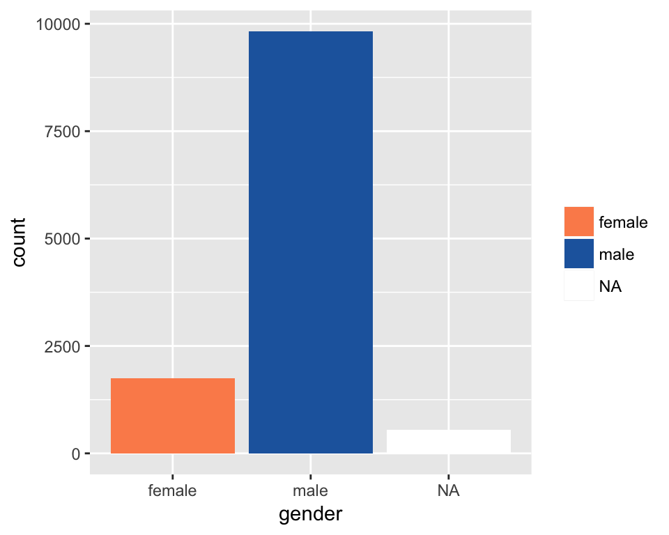

genderize.io

Heike Hofmann
Oh it’s only the best day of the year. Every February 13th, my lady friends and I leave our husbands and our boyfriends at home, and we just come and kick it, breakfast-style. Ladies celebrating ladies. It’s like Lilith Fair, minus the angst. Plus frittatas.
Leslie Knope, Parks & Rec
ggplot2ggplot2 is …ggplot2 is …A graphical representation (plot) consists of:
aes): data variables are mapped to graphical elementsgeoms, such as points, lines, rectangles, text, …) and statistical transformations (stats, are identity, counts, bins, …)coord): normally Cartesian, but pie charts use e.g. polar coordinatesAndrew Flowers (Rstudio conference, 2018): What makes a data story worth telling?
Where is the danger?
stations <- read.csv("data/stations.csv")
stations %>% ggplot(aes(x = long, y = lat)) +
geom_point() + coord_equal()Data is collected within a context - visually we can provide context with layers (using ggmap by David Kahle):
Capital bikeshare is DC company; in 2017, 3.7 million bike trips were made
trips <- readRDS("data/trips-2017.rds")
trips %>% ggplot(aes(x = `Duration (ms)`/1000/60)) +
geom_histogram(binwidth=15) + xlab("Trip Duration (in mins)")Where are the metro stations?
Thickness of lines shows number of rentals - metro stations are popular start and end stations
Made with R package geomnet by Sam Tyner
ggmosaic package by Haley Jeppsonsugrrants by Earo Wangggplot2ggplot2 great
genderizeR packageKamil Wais (2016). genderizeR: Gender Prediction Based on First Names. R package version 2.0.0. https://CRAN.R-project.org/package=genderizeR
suppressMessages(library(genderizeR))
givenNames <- findGivenNames(c("heike", "sam", "samantha", "haley", "hadley", "Tes", "Jing", "Jackie"))givenNames## name gender probability count
## 1: heike female 0.98 48
## 2: sam male 0.76 3336
## 3: samantha female 1 2438
## 4: haley female 0.99 393
## 5: hadley female 0.77 13
## 6: tes female 0.71 7
## 7: jing female 0.72 126
## 8: jackie female 0.95 1453genderize functionfindGivenNames doesn’t support that yetdb <- readRDS("data/packages.rds")
glimpse(db)## chr [1:12148, 1:65] "A3" "abbyyR" "abc" "abc.data" "ABC.RAP" ...
## - attr(*, "dimnames")=List of 2
## ..$ : NULL
## ..$ : chr [1:65] "Package" "Version" "Priority" "Depends" ...
## - attr(*, "web_dir")= chr "/srv/ftp/pub/R/web/packages"
## - attr(*, "src_dir")= chr "/srv/ftp/pub/R/src/contrib"glimpse(maintainer_year_clean)## Observations: 12,148
## Variables: 5
## $ name <chr> "Scott Fortmann-Roe <scottfr@berkeley.edu>", "Gaurav...
## $ year <int> 2015, 2017, 2015, 2015, 2016, 2017, 2012, 2017, 2016...
## $ author <chr> "Scott Fortmann-Roe", "Gaurav Sood [aut, cre]", "Csi...
## $ title <chr> "Accurate, Adaptable, and Accessible Error Metrics f...
## $ firstname <chr> "scott", "gaurav", "blum", "blum", "abdulmonem", "fl...genderized_names <- read_csv("data/all_names_manual.csv")
maintainer_year_clean <- left_join(maintainer_year_clean,
genderized_names, by="firstname")
maintainer_year_clean <- maintainer_year_clean %>% filter(firstname != "orphaned")
glimpse(maintainer_year_clean)## Observations: 12,115
## Variables: 10
## $ name <chr> "Scott Fortmann-Roe <scottfr@berkeley.edu>", "Gaur...
## $ year <int> 2015, 2017, 2015, 2015, 2016, 2017, 2012, 2017, 20...
## $ author <chr> "Scott Fortmann-Roe", "Gaurav Sood [aut, cre]", "C...
## $ title <chr> "Accurate, Adaptable, and Accessible Error Metrics...
## $ firstname <chr> "scott", "gaurav", "blum", "blum", "abdulmonem", "...
## $ freq <int> 55, 5, 2, 2, NA, 18, 1, 11, NA, 13, 21, 25, 2, 36,...
## $ gender <chr> "male", "male", "male", "male", NA, "male", "male"...
## $ probability <dbl> 1.00, 1.00, NA, NA, NA, 1.00, 1.00, 0.99, NA, 0.53...
## $ count <int> 3450, 241, NA, NA, NA, 489, 33, 2098, NA, 1523, 49...
## $ guess <chr> "no", "no", "yes", "yes", NA, "no", "no", "no", NA...maintainer_year_clean %>%
group_by(gender) %>% tally()## # A tibble: 3 x 2
## gender n
## <chr> <int>
## 1 female 1747
## 2 male 9825
## 3 <NA> 543ggplot(maintainer_year_clean, aes(x=gender, fill=gender)) +
geom_bar() +
scale_fill_manual("", values=c("female"="#fc8d59", "male"="#2166ac"),
na.value="white")
ggplot(maintainer_year_clean, aes(x=gender, fill=gender)) +
geom_bar() +
scale_fill_manual("", values=c("female"="#fc8d59", "male"="#2166ac"),
na.value="white") +
facet_wrap(~year)ggplot(maintainer_year_clean, aes(x=year, fill=gender)) +
geom_bar() +
scale_fill_manual("", values=c("female"="#fc8d59", "male"="#2166ac"),
na.value="white")ggplot(maintainer_year_clean, aes(x=product(year), fill=gender)) +
geom_mosaic() +
scale_fill_manual("", values=c("female"="#fc8d59", "male"="#2166ac"),
na.value="white")